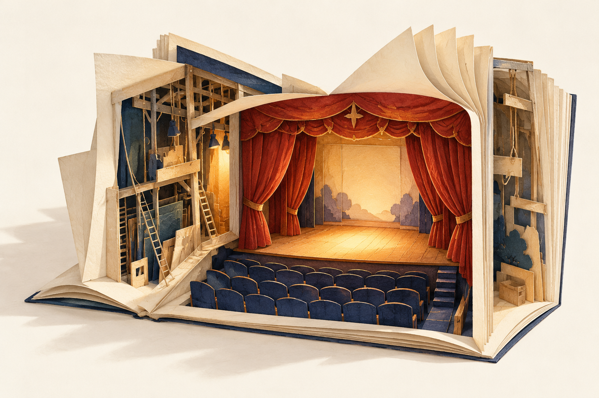

あの場所は、誰がつくった？ ／ 下北沢
俳優をあきらめた人が、劇場をつくった。
夢のつづきは、
舞台の上だけにあるとは限らない。

立つ場所が変わっても。
ぴあの紹介からたどる、本多一夫の歩み俳優
映画会社の新人俳優に選ばれて上京した本多一夫。ところが４年後、その会社が倒産し、俳優の道を断念する。劇場をつくる人になる前に、自分が演じる場所を失った人でもあった。ぴあの紹介は、この転機から歩みをたどる。
飲食店
次に向かったのは、飲食の仕事だった。これまでに経営してきた飲食店は、50軒以上。演じることから離れても、演劇への思いは消えなかった。店を営む時間を経て、その思いは、自分が出演するのではなく、劇場を開くという形へと変わっていく。
劇場
本書では本人の語りに、柄本明、野田秀樹、宮藤官九郎らの証言が重なる。場所をつくった人と、そこで演じた人。同じ劇場を両側からたどれることが、この一冊への入口だ。一人の転機が、別の誰かの舞台になる。そのつながりから読み始めたい。
本の外の話 ／ 劇場を引き継ぐ人が語る
劇場は、
開けて終わりじゃない。
本多劇場グループ総支配人・本多愼一郎は、2025年のインタビューで、開場当初の本多劇場には公演が少なく、カラオケ大会も入っていたと振り返る。演目が埋まっていくまでには、時間がかかった。
空調が壊れたときに早く直せるよう、自分で補修を覚えたという話もある。舞台の上だけでなく、観客を迎える環境を整えることも、劇場を続ける仕事なのだ。開場までの歩みを知ったら、その先の時間にも目を向けたい。
本多愼一郎のインタビューを読む
出典・編集と画像について
根拠：ぴあ株式会社の2018年9月28日付出版社発表（PR TIMES）。公式本文は2026年10月30日に再確認。「50軒以上」は過去の経営歴を示し、現在の店舗数ではありません。
「本の外の話」は、ほぼ日の本多愼一郎インタビュー（2025年7月22日）に基づきます。本文確認：2026年10月30日。本書に収録された話として紹介しているものではありません。
本の紹介は出版社発表、追加の節は当事者への公開取材に基づく要約です。冒頭の見出し、章見出し、各所の問いかけや誘いは当書店の編集表現であり、本書からの引用ではありません。通読による批評ではなく、現在の営業・上映・在庫を保証する案内でもありません。
劇場模型はAI生成の編集イメージです。書影は出版社発表に掲載された画像を使用しています。画像利用許諾は未確認です。画像・編集方針について